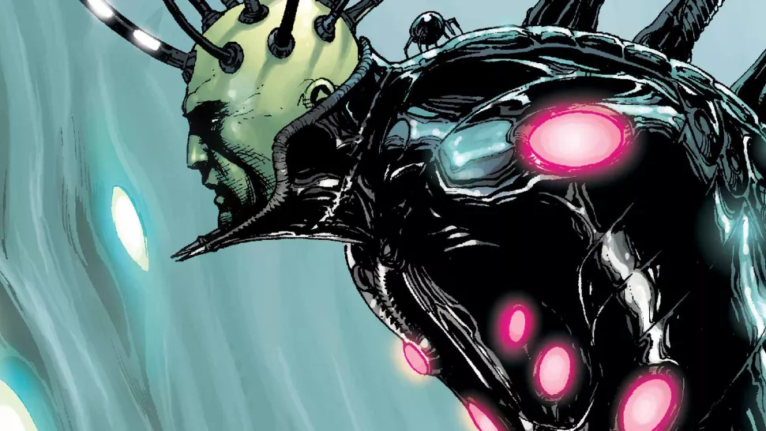

"As we say, Lex Luthor isn't just Superman's greatest enemy, he's one of the greatest supervillains of the entire DCU and heck, all of comic books."
Still, with Luthor, it all comes back to Superman. Throughout all his incarnations - corrupt businessman ... mad scientist ... all-out, megalomaniacal, world-conquering supervillain ... to his current-day role of Earth-protector - his motivation is almost always the same: take down the Man of Steel, prove that Luthor is the best and that all others are beneath him.
Whatever the incarnation of Lex Luthor, there's a perfect dichotomy between Luthor and Superman. Superman represents an outside force, achieving things that humanity could never dream to accomplish, all for the good of his adopted world. Luthor is humanity's greatest potential, too selfish and arrogant to use his gifts to better anyone but himself. There's a subtle, but brilliant dynamic between the two viewpoints that makes Superman seem all the stronger, and Luthor seem all the more malevolent.
No Superman villain is as well known, as well-loved, or as well-traveled as Lex Luthor. Often seen as the de facto leader of all of the DCU's supervillains, he's been portrayed as such in too many incarnations to name, much like Superman is most often seen as the leader of DC's pantheon of heroes.
An alien intelligence with a cold, calculating mind, a nearly indestructible, always repairable body, and an unrivaled thirst for knowledge and power. This is Brainiac, an artificial intelligence created by the Computer Tyrants of Colu, an alien world where logic and knowledge are paramount to everything else.
Fearing the power they had instilled in Brainiac, who was designed to conquer alien worlds, they made him only as smart as their smartest members. But he quickly developed a stronger intelligence and struck out on his own, coming into conflict with Superman again and again.
Brainiac is perhaps most notorious for shrinking the Kryptonian city of Kandor and storing it in a bottle on his ship along with cities from many other worlds. Kandor was, therefore, one of the only remaining vestiges of Kryptonian society. After a conflict in which the true Brainiac (it was revealed that the other incarnations Superman had faced over the years were merely emissaries or duplicates) came to Earth, Superman finally rescued Kandor, restoring it to full size and leading to it becoming New Krypton, a satellite planet in orbit around the Earth.
Of course, that didn't last, thanks to the machinations of Brainiac and Lex Luthor, who has often been shown to ally with the mad computer intelligence in their mutual pursuit of conquest and power.
